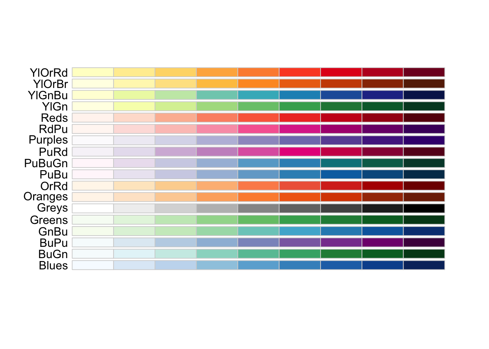
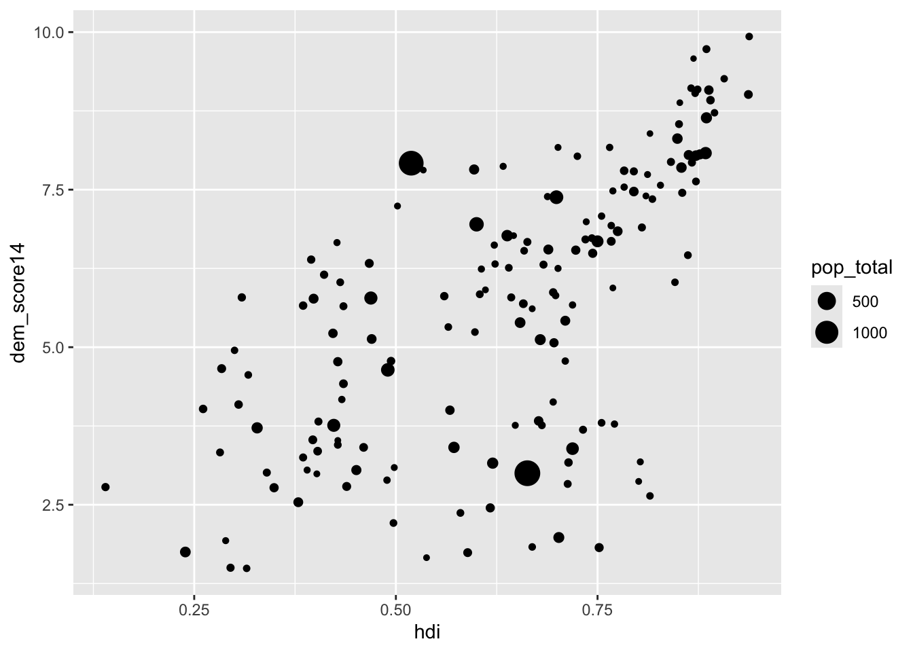

Apariencia
Personalización y temas
Introducción
En esta parte del curso, aprenderemos a personalizar los gráficos y hacerlos más atractivos. Como en las partes anteriores, utilizaremos la gramática de los gráficos incorporada en la librería ggplot2 para hacerlo. El propósito consiste en cambiar diversos elementos relacionados al aspecto y la presentación de los gráficos que facilita su interpretación y que ayudan mucho en la comunicación de los resultados.
Personalización de los gráficos
Las variables básicas: color, forma y tamaño
Color
El elemento más evidente en la personalización de los gráficos es el color. En ggplot2, los colores se pueden modificar de diversas maneras. Por ejemplo, se pueden cambiar los colores de las líneas, los puntos, las barras, los textos, los fondos, entre otros.
Además, los colores no van solos, sino que se combinan en paletas o escalas de colores. Las paletas de colores son conjuntos de colores que se combinan de manera armoniosa y que se utilizan para representar diferentes categorías o variables en un gráfico. Existen tres tipos fundamentales de escala de colores:
- sequencial - se utilizan para representar variables numéricas contínuas que van de un valor bajo a un valor alto. Por ejemplo, la población, el porcentaje de voto o el PIB per cápita.
La figura arriba muestra las paletas de colores secuenciales disponibles en el paquete RColorBrewer que incorpora las escalas desarrolladas por Cynthia Brewer y que se pueden explorar en ColorBrewer. Como podemos ver, los colores van de los tonos más claros a los más oscuros. En general, los colores más claros representan valores bajos y los colores más oscuros representan valores altos.
- divergente - se utilizan para representar variables numéricas que tienen un punto medio o un valor de referencia. Por ejemplo, la diferencia entre dos valores, la temperatura, el cambio porcentual o la correlación.

Ahora, el punto medio de la escala tiene su centro en un color neutro -como el blanco, el gris o el amarillo- y dos escalas contrarias que marcan posiciones antagónicas. Los colores de cada una de ellas se hace más intensos a medida que se alejan del centro.
- cualitativo - se utilizan para representar variables categóricas o nominales. Por ejemplo, los países, los partidos políticos, los tipos de productos o los colores.

Tales escalas permiten representar valores que no poseen un orden o una jerarquía. Por lo tanto, los colores se utilizan para diferenciar las categorías y no para representar valores numéricos. De ese modo, no hay un patrón jerárquico ascendiente, descendiente o centrífugo. El objetivo consiste en diferenciar al máximo las categorías entre sí, sin establecer una relación de jerarquía entre ellas.
De ese modo, debemos emplear diferentes escalas de color de acuerdo con el tipo de información que disponemos. Por ejemplo, si queremos representar la evolución de una variable a lo largo del tiempo, es mejor utilizar una escala de color secuencial. Si queremos representar la diferencia entre dos valores, es mejor utilizar una escala de color divergente. Si queremos representar diferentes categorías, es mejor utilizar una escala de color cualitativa.
Además, en un gráfico de ggplot2 hay dos elementos que se somente a la manipulación del color: el fill y el color. El fill se utiliza para rellenar áreas -de las barras, líneas, puntos, polígonos, entre otros-. El color, por otra parte, se utiliza para cambiar el color de los bordes.
Las funciones relacionadas a las escalas de color, por lo tanto, respetan eso dos ejes: el tipo de escala (secuencial, divergente o cualitativa) y si se trata de color (color) o relleno (fill).
El gráfico de cajas (boxplot) abajo es el mismo de la sección anterior. No obstante, ahora añadimos un elemento más al gráfico: la escala de color scale_color_brewer y seleccionamos la paleta cualitativa llamada Dark2. Aprovechamos también para cambiar el título de la leyenda para “Región” (name=“Región”). Vemos que los colores de relleno de las cajas cambian para corresponder a la nueva escala de color.
El gráfico original:
Code
# carga los datos y
# el paquete ggplot2
library(poliscidata)
library(ggplot2)
# Datos sobre los estados
# de EE. UU.
d <- states
# Crea el gráfico de cajas (boxplot)
p <- ggplot(data = d,
mapping = aes(x=unemploy,
y=region,
color=region,
group=region)) +
geom_boxplot(width=0.1)
pEl gráfico con la nueva escala:
Code
p <- p + scale_color_brewer(name="Región",
palette="Dark2")
pAhora, emplearemos el atributo fill para cambiar el color de relleno. Para ello, en lugar de emplear color en la capa de estética, cambiaremos para fill y a scale_fill_brewer. Veamos la diferencia en un nuevo gráfico:
Code
# carga los datos y
# el paquete ggplot2
library(poliscidata)
library(ggplot2)
# Datos sobre los estados
# de EE. UU.
d <- states
# Crea el gráfico de cajas (boxplot)
p <- ggplot(data = d,
mapping = aes(x=unemploy,
y=region,
fill=region,
group=region)) +
geom_boxplot(width=0.1)
p
Code
p <- p + scale_color_brewer(name="Región",
palette="Dark2")
p
Y si quiero elegir los colores, ¿qué hago? Sencillo, debes elegir la escala de color o relleno manual:
Code
p <- p + scale_fill_manual(values=c("red3",
"steelblue",
"darkgreen",
"purple"))
pFormas y símbolos
Otro elemento visual que podemos adaptar a nuestros intereses son las formas o los símbolos. Por ejemplo, en algunas publicaciones, piden a los autores que generen gráficos en blanco y negro o escala de grises. En esos casos, toca emplear otros recursos visuales. En un diagrama de dispersión podemos querer emplear distintos tipos de símbolo (círculos, cuadrados, triángulos o rombos, por ejemplo) para diferencias entre categorías.
Para ello, empleamos el parámetro shape en la capa estética para definir que a una variable determinada corresponderá un símbolo único. Reutilizaremos el código para el gráfico de dispersión de la sección anterior para establecer el continente (regionun) como variable que determinará la forma de los puntos en el gráfico:
Code
library(poliscidata)
# Empleamos los datos de paises
# y excluimos los casos en los
# que no hay información sobre
# la religión
w <- world
w <- w[! is.na(w$religoin),]
library(ggplot2)
# Crea el gráfico
p <- ggplot(w)
# Capa estética con la religión
# como color
p <- p + aes(x=hdi,
y=dem_score14,
shape=regionun)
# Capa geométrica
p <- p + geom_point()
# Visualiza el gráfico
pTamaño
Finalmente, el tamaño representa la tercera variable visual que nos ocuparemos aquí. El parámetro sizepermite escalonar las observaciones del gráfico para que se destaquen en función de una variable numérica. En el siguiente gráfico de dispersión, empleamos el tamaño de los puntos para representar la población total de los países.
Code
library(ggplot2)
# Crea el gráfico
p <- ggplot(w)
# Capa estética con la religión
# como color
p <- p + aes(x=hdi,
y=dem_score14,
size=pop_total)
# Capa geométrica
p <- p + geom_point()
# Visualiza el gráfico
p
Texto
La gran mayoría de los gráficos incluye un conjunto de elementos de texto: títulos, ejes, etiquetas, leyendas, entre otros. Una buena elección de título, su tamaño y posición, por ejemplo, puede hacer que el gráfico sea más fácil de entender. En gráficos científicos, resulta obligatorio añadir información las fuentes de los datos. El tipo de fuente también puede ser manipulado para mejorar la legibilidad del gráfico o para atraer la atención. Por esa razón, en este apartado veremos cómo manipular los elementos textuales de los gráficos. Nos concentraremos en tres elementos concretos: las fuentes o tipografías, los títulos y las etiquetas.
Fuentes
Las fuentes tipográficas pueden personalizar un gráfico y ayudar a convertirlo en algo más atractivo. En ggplot2, la función theme permite manipular los elementos textuales de un gráfico. Para cambiar la fuente de un gráfico, empleamos el atributo family en la función element_text. No obstante, muchas geometrías de ggplot2 tienen un atributo family que permite cambiar la fuente de un elemento específico.
A continuación, mostramos cómo cambiar la fuente de un gráfico de dispersión con dos fuentes descargadas de Google Fonts: Griffy y Mr Bedfort. Para ello, empleamos la función theme y element_text para cambiar la fuente de los elementos textuales del gráfico:
Code
p + theme(text=element_text(family="Griffy",
size=20,
face="bold"))Code
p + theme(text=element_text(family="Mr Bedfort",
size=16))Títulos
¿Qué hacemos con un gráfico sin títulos? Pues, no sabríamos qué estamos viendo. Los títulos son esenciales para la interpretación de los gráficos. Los ejes también deben estar bien etiquetados para que el lector pueda entender qué está viendo.
En ggplot2, los títulos se pueden añadir a través de la función labs. Esta función permite añadir títulos a los ejes, la leyenda y el gráfico en general. A continuación, mostramos cómo añadir un título al gráfico de dispersión de la sección anterior:
Code
p <- p + labs(title="Índice de Desarrollo Humano vs. Democracia",
subtitle= "Países del mundo",
x="Índice de Desarrollo Humano",
y="Democracia",
caption="Fuente: paquete poliscidata.",
size="Población")
pUna curiosidad. Si os habéis fijado bien, hemos añadido un parámetro size=“Población” a los textos. Este parámetro permite añadir un título a la leyenda de tamaño del gráfico. Si hubiéramos añadido una variable de color, podríamos añadir el título de la leyenda de color con el parámetro color=“Religión”. Hagámoslo:
Code
# Añade la religión como color en
# la capa de estética
p <- p + aes(color=religoin)
# Añade el título de la leyenda de color
p <- p + labs(color="Religión")
# Muestra el gráfico
pComo podéis ver, lo que había hecho antes se quedó y he ido añadiendo cosas. Esa es una de las principales ventajas de ggplot2: la capacidad de añadir elementos a un gráfico de forma sencilla y rápida.
Etiquetas de valores
En algunos casos, es necesario añadir etiquetas a los valores de un gráfico. Por ejemplo, en un gráfico de dispersión, puede ser útil añadir el nombre de los países a los puntos. Para ello, empleamos la función geom_text o geom_text_repel del paquete ggrepel. La función geom_text añade etiquetas a los puntos del gráfico, mientras que geom_text_repel añade etiquetas que no se solapan entre sí. A continuación, mostramos cómo añadir etiquetas a los puntos del gráfico de dispersión de la sección anterior:
Code
p <- ggplot(d, aes(x=abort_rate08,
y=obama08))+
geom_point()
p + geom_text(aes(label=stateid),
hjust=0,
vjust=0)El próximo gráfico muestra cómo utilizar la función geom_text_repel para añadir etiquetas a los puntos del gráfico de dispersión. En este caso, las etiquetas no se solapan entre sí:
Code
# Carga el paquete
library(ggrepel)
# Añade las etiquetas
p + geom_text_repel(
aes(label=stateid),
hjust=0,
vjust=0,
check_overlap = TRUE)Temas
Los temas son una forma de personalizar la apariencia de un gráfico. Tienen una enorme utilidad, porque permiten cambiar la apariencia de un gráfico de forma rápida y sencilla y, además, garantizar un estilo único para los gráficos de un proyecto. Por ejemplo, si estoy escribiendo la tesis doctoral y quiero garantizar que todos mis gráficos tengan la misma apariencia, puedo crear un tema personalizado y aplicarlo a todos los gráficos. Este trabajo sería mucho más laborioso sin el uso de los temas.
En ggplot2, los temas permiten cambiar la apariencia de los elementos del gráfico, como el fondo, los ejes, las etiquetas, entre otros. La función theme permite cambiar el tema de un gráfico. Existe una cantidad enorme de temas predefinidos en ggplot2 o en paquetes adicionales como ggthemes o tvthemes, pero también es posible crear un tema personalizado.
Temas predefinidos
En paquete ggplot2 posee una serie de temas predefinidos que permiten cambiar la apariencia de un gráfico. Son conjunto de instrucciones que definen la apariencia de los elementos de un gráfico, como la fuente, los colores, el fondo, los ejes, entre otros.El código abajo muestra cómo cambiar el tema de un gráfico de dispersión a un tema predefinido de ggplot2:
Code
p <- ggplot(d, aes(x=abort_rate08,
y=obama08))+
geom_point()+
labs(title="Aborto y voto en Obama",
subtitle="Tasa de aborto y voto en Obama en los estados de EE. UU. en 2008.",
x="Tasa de aborto",
y="Votos para Obama",
caption="Fuente: paquete poliscidata.")
p <- p + theme_classic()
p + geom_text_repel(
aes(label=stateid),
hjust=0,
vjust=0,
check_overlap = TRUE)Si comparamos con la versión anterior del mismo gráfico, vemos que hay una mejoría significativa en la presentación. El tema theme_classic es uno de los temas predefinidos de ggplot2. Otros temas predefinidos son theme_minimal, theme_light, theme_dark, theme_bw, entre otros. No hay colores y muy pocos elementos decorativos, algo que convierte el gráfico en particularmente atractivo para visualizar los patrones.
Podemos utilizar el tema de los Simpsons del paquete tvthemes para cambiar la apariencia de un gráfico.
Code
library(tvthemes)
p + theme_simpsons()Personalización de los temas
Si los temas predefinidos no son suficientes, es posible personalizar un tema detalle por detalle. Para ello, se utiliza la función theme y se añaden los elementos que se desean personalizar. Tomemos como ejemplo el ridge plot que creamos anteriormente.
Code
# Carga los paquetes
library(ggplot2)
library(ggridges)
# Crea el gráfico
# con la relación entre
# fraccionamiento étnico y religión
p <- ggplot(w,
aes(x=frac_eth,
y=religoin,
fill=religoin))
# Añade la capa de geometría
p <- p + geom_density_ridges()
# Visualiza los resultados
pCambiemos una serie de elementos para hacerlo más atractivo:
Code
# Añadimos un título y los nombres de los ejes
p <- p + labs(title="**Fraccionamiento étnico y religión**",
x="Fraccionamiento étnico",
y="",
caption="Fuente: paquete poliscidata.",
fill="Religión")
# Cargamos el paquete ggtext
# que permite personalizar la
# apariencia de los textos
library(ggtext)
# Personalizamos la aparencia
p <- p + theme(text=element_text(family="Kranky"), # Fuente
legend.position = "bottom", # Leyenda abajo
plot.title = element_markdown(size=20), # Título en markdown
panel.background = element_rect(fill="white")
)
# Cambiamos la escala de color
# para la de juego de tronos
# del paquete tvthemes
p + scale_fill_westeros()